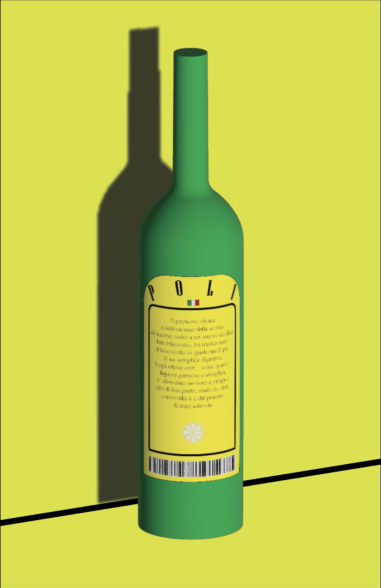
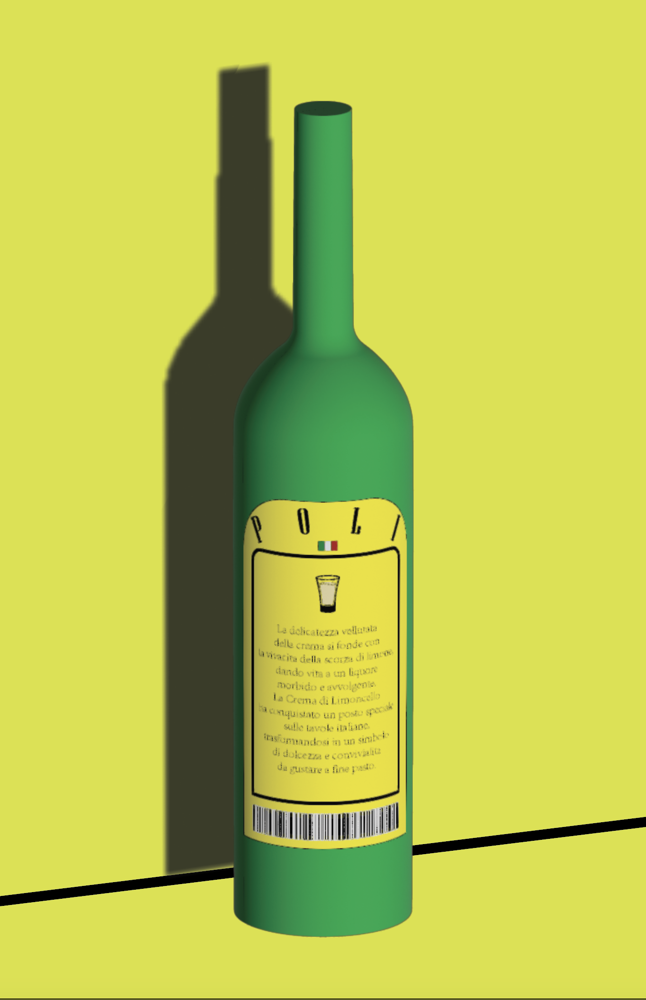
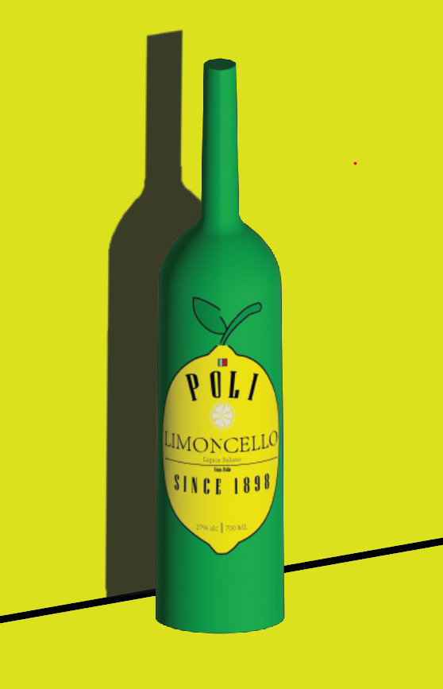
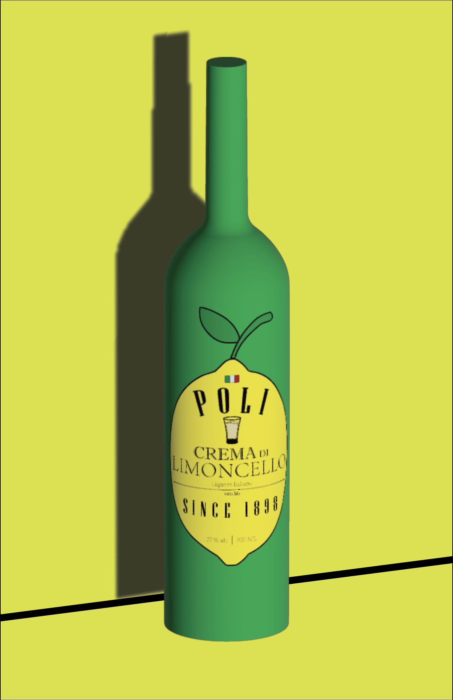

At Poli Limoncello, we bring generations of Italian tradition into every bottle. Handcrafted in the heart of Veneto by the renowned Poli Distillery, our limoncello is a celebration of authenticity, passion, and the zest of life. Made with fresh, sun-ripened Sicilian lemons and using time-honored family recipes, Poli Limoncello offers a perfectly balanced, vibrant flavor—both refreshing and rich. Our commitment to quality is unwavering. We use natural ingredients, no artificial additives, and a meticulous infusion process that captures the true essence of the lemon. Whether sipped chilled after dinner, mixed into a cocktail, or gifted as a token of Italian elegance, Poli Limoncello delivers a taste of tradition with every pour. Join us in raising a glass to heritage, craft, and the simple pleasures of life—Poli Limoncello: the spirit of sunshine in a bottle.



Poli Limoncello has a bright, zesty lemon flavor with a perfect balance of sweetness and tartness. It's refreshingly citrusy, with the natural taste of lemons shining through, complemented by a smooth, sugary sweetness that isn't overpowering. The finish is clean and slightly tangy, leaving a crisp, refreshing aftertaste. Overall, it’s vibrant, tangy, and sweet, with a very fresh, natural lemon essence.

Poli Crema di Limoncello is a rich and indulgent Italian liqueur that combines the bright, zesty flavor of lemons with a smooth, creamy texture. It offers a delightful balance between the tartness of lemon and the sweetness of cream, creating a dessert-like experience in a glass. The liqueur is typically enjoyed chilled, making it a refreshing choice after meals or as a luxurious addition to desserts. Its versatility also allows it to be used in various cocktails, adding a creamy citrus twist to your favorite drinks.